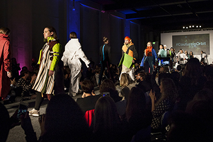
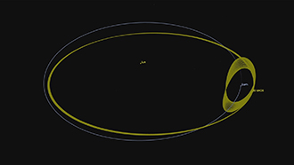
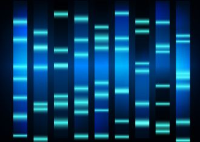
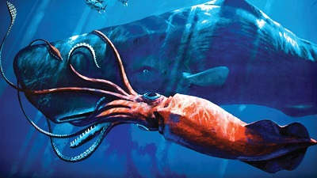
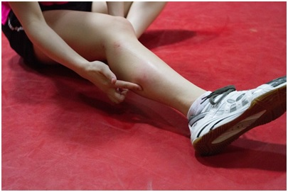

《魔兽》评论
比武审判是什么？狮鹫能飞吗？黑手的断手是截肢手术吗？快点进来看。
欧空举办了场怎样的时装秀
欧空局、博物馆、时装秀，一场真正的跨界。
月亮以外，地球有了新伴侣
天文学家新发现了一颗小行星，在过去近一个世纪的时候里，一直绕着地球转圈圈，而且在未来几百年仍然会对地球不离不弃。所以，除了月亮这颗天然卫星以外，地球现在又多了一个伴（xiǎo）侣（sān）！
基因检测结论也影响着种族冲突
研究发现，有关种族间基因比较的信息也会影响人们对于“异族人”的态度。强调基因共性时，人们对待不同种族人的态度显得更友善，而如果强调差异，则可能会使原本对立的态度更加加剧。
最大的乌贼
虽然抓不到最大的，但我们可以算啊！
蚊子为啥光咬你不咬别人
大约20%的人对蚊子来说尤其美味，也被蚊子叮咬得更加频繁。关于为什么蚊子更喜欢叮咬某些人而非其他人，科学家们给出了许多解释。新陈代谢，运动，衣服颜色，甚至喝啤酒都会让蚊子觉得你秀色可餐。
- all by skychou
- no 21 wuhu anhui
- email:smartweare@outlook.com